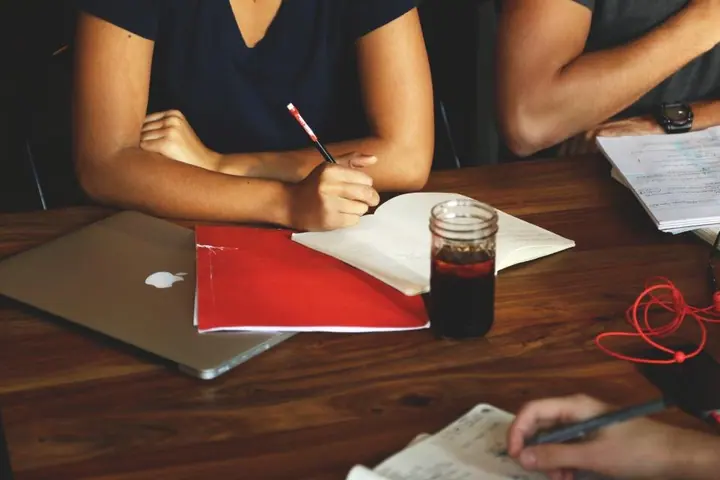
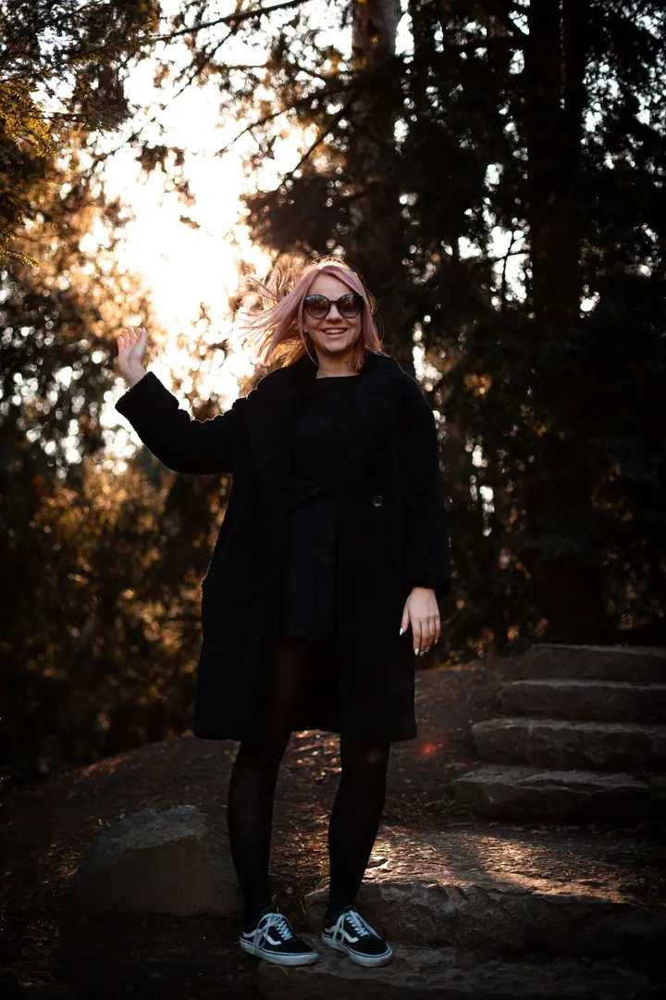

01 / 04
Gastronomie a produkty
Fotím jídlo pro restaurace a kuchaře i produkty pro značky. Talíře často snímám shora na tmavém pozadí, aby vynikly barvy a detaily.
Zeptat se na termín→




Fotografie a video pro značky i lidi
Zeptat se na termín →(01) Ahoj
Jmenuji se Jan Samuel a jsem fotograf a videomaker . Fotím reklamu, gastronomii a auta, ale také business portréty a svatby . Ke každé zakázce přistupuji jako k malému natáčení, se světlem a jasnou představou.
(02) Co fotím
01 / 04
Fotím jídlo pro restaurace a kuchaře i produkty pro značky. Talíře často snímám shora na tmavém pozadí, aby vynikly barvy a detaily.
Zeptat se na termín→02 / 04
Komerční fotky a video pro firmy, včetně focení aut ve dne i v noci. Zkušenosti mám i z natáčení reklam, kde jsem pracoval ve filmovém štábu.
Zeptat se na termín→03 / 04
Portréty pro firmy, osobní značky i pro vás samotné. Pracuji se světlem v ateliéru, ve městě i venku.
Zeptat se na termín→Dále nabízím
Fotím svatební den od obřadu po společné chvíle novomanželů. Hledám přirozené momenty i detaily, jako jsou prstýnky nebo kytice.
↗(04) Postup
Od první zprávy po hotovou galerii.
Krok 1 z 4
Napíšete mi nebo zavoláte, co potřebujete. Probereme účel fotek nebo videa, místo a termín.
Krok 2 z 4
Podle zadání připravím koncept, světlo a průběh focení. U reklamy a gastronomie si předem ujasníme záběry, které potřebujete.
Krok 3 z 4
Na místě pracuji v klidu a s důrazem na detail. Postarám se o světlo, kompozici i atmosféru.
Krok 4 z 4
Vybrané fotky a video pečlivě upravím a předám vám je v podobě připravené pro web, sociální sítě i tisk.
Každý záběr stavím světlem
(05) Za objektivem
Fotografii a videu se věnuji šest let. Začalo to na střední škole reklamní a umělecké tvorby, kde jsem studoval filmovou tvorbu, a od té doby mě práce s obrazem nepustila.
Kromě vlastních zakázek pracuji i ve filmových štábech. Jako asistent kamery jsem se podílel na reklamách pro ŠKODA AUTO, natáčel jsem hudební klipy kapely I am Rosie a jako best boy jsem byl u reklamy na sluchátka Philips. Z natáčení si beru pečlivou přípravu a cit pro světlo.
Dnes fotím a natáčím pro restaurace, firmy a značky, fotím auta, business portréty i svatby. Rád stavím záběr světlem, ať jde o talíř na černém pozadí, nebo o auto v noci.
Jan
Jan Samuel · Fotograf a videomaker pro reklamu, gastronomii a portréty
Ano, jsem fotograf i videomaker. Fotky i video vám můžu připravit v rámci jedné zakázky.
Ano, gastronomie patří k tomu, co dělám nejraději. Fotím jednotlivé talíře, kuchaře i atmosféru podniku.
Cenu stanovím podle rozsahu, místa a toho, zda chcete i video. Napište mi, co plánujete, a pošlu vám nabídku.
Ano. Kromě komerční práce fotím svatby a portréty, osobní i firemní.
(07) Kontakt
Napište pár vět o tom, co si představujete, a termín, který se vám hodí.